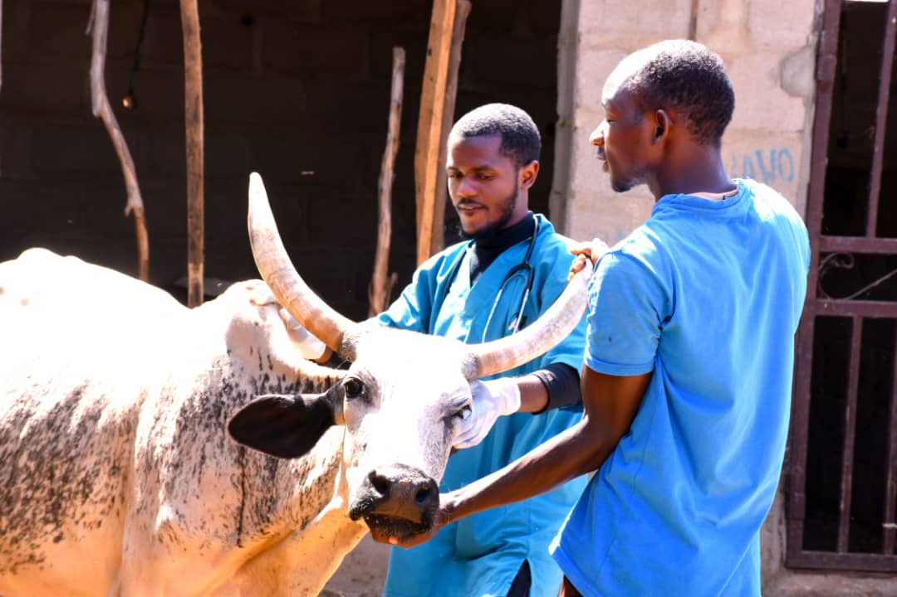

Blog Post One
Renewed Hope As A Result of PPR Vaccination 2Majority of the inhabitants of rural communities in Northern Nigeria, largely depend on agriculture as their main source of income. This is also true for women who depend on the...
See More